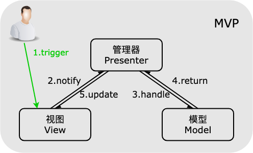

MVP 模式
MVC --> MVP 演变
-
MVC 模式的 View 层和 Model 层存在耦合。在MVC模式中，View 需要初始化 Model, 使用 Model
获取数据来更新自己， 并且订阅 Model 数据。
-
为了将 View 层与 Model 层解耦，View 的数据来源将从 Model 转移到 Controller
中，从而形成一次架构升级，升级后的模式称为 MVP 模式，即 Controller 变成名称为
Presenter（管理层）， View 依然专注管理者 HTML 只是数据来源改为从 Presenter 处获取。Model
依然专注管理数据层，但 View 不再订阅 Model 的数据变化，所以不再需要通知 View，改而 Presenter
订阅 Model 数据变化，Model 通知 Presenter ， Prensenter 接收到数据之后通知 View。
- 使得对 View 层的修改不会影响到 Model 层，而对 Model 层的数据改动也不会影响到 View 层。
- 典型流程是 View 层 触发的事件 传递到 Presenter 层中处理(处理事件，写click 回调函数)，Presenter 层去操作 Model 层，并且将数据返回给 View 层，这个过程中，View 层和 Model 层没有直接联系 。而 View 层不部署业务逻辑，除了展示数据和触发事件之外，其它时间都在等着 Presenter 层来更新自己，被称为 「被动视图」 。
特点
- Model 模型层：只负责存储数据，与 View 呈现无关，也与 UI 处理逻辑无关，发生更新也不用主动通知 View；
- View 视图层：人机交互接口，一般为展示给用户的界面；
- Presenter 管理层 ：负责连接 Model 层和 View 层，处理 View 层的事件，负责获取数据并将获取的数据经过处理后更新 View；

修改 MVC
- 将 model 对象从 View 中移除。
- View 只跟 Controller 交互
- Controller 负责跟 Model 交互
- View 和 Model 没有任何直接交互
- View 不再订阅 Model 的发布
- Model 无需再为自己的行为注册发布者
- View 的数据来自 Controller，并且 View 的更新动作 在 Controller 内触发
- 发布者 只有 View 一个
MVC 实战案例